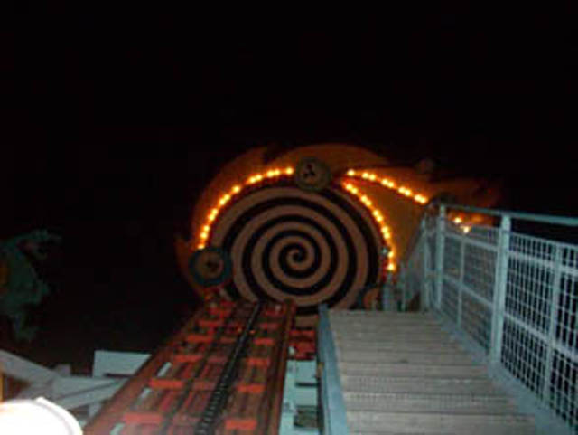
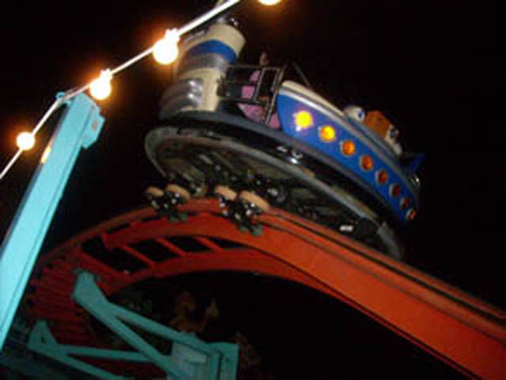
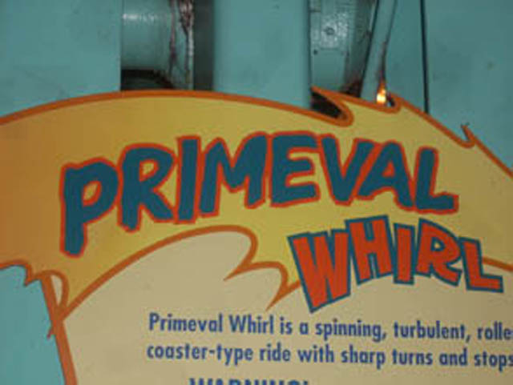

| |

Primeval Whirl Review

For today's review, we'll be going back in time to my visit to the Walt Disney World Resort (specifically Animal Kingdom) where we'll be reviewing one of the most magical and unique rides ever created. Today's review is of a one of a kind, and now sadly rare thanks to this coaster murder, Reverchon Crazy Mouse. The most state of the art roller coaster ever created (Though to be honest, It's not nearly as cool as the ever so amazing Pole Position). We got into our cars and away we went. We roll through a turn and head up the lifthill. During the lifthill, you see a bunch of clocks ticking backwards and a big spiral at the top of the lifthill. This is supposed to represent Time Travel or something like that. Like what we're doing here for riding this coaster. Except I'd do something much better than see some stupid Dinosaurs if I could go back in time, like go back to 2002 so I could attend the opening day of this ever so magnificent and wonderful ride that could only be featured at a Disney Park! You head off the lifthill and into a turn. You're not spinning yet. We'll get to that later. So right now, it's just like an ordinary Wild Mouse. The Switchbacks arn't that great as there's not that much whip and the laterals arn't comfortable. Though it is amusing to see the Dinosaurs fleeing from our presence (There was no asteroid impact. We made the dinosaurs go extinct. Sorry Everybody). After the switchbacks, you head into a small drop and back up the small hill. This is fun. You then kill some more dinosaurs who are holding up signs that say "THE END IS HERE!!!" We then head into the biggest drop of the ride. We seem like we're going to hit the back in time clocks as we dip to the ground. We then head into some double up thing which sadly, but not suprisingly, has no airtime. We then jolt around another turn and head into the second set of switchbacks. However as we head straight into them, we begin to spin. And on Primeval Whirl, the spinning is actually pretty good. Unlike in the first set of switchbacks, there are no jolts and the spinning is quite fun. After a couple switchbacks, we head through one last turn, and then we head into a small drop. That small drop is actually pretty cool while spinning. You then spin through a couple bumps. Then you head through one last turn and head into the brake run. Stacking here is fine since your car is still spinning and that is quite cool with us. It is just such a tragedy that this is the coaster that Disney was so cruel and heartless to kill this coaster. F*CK ALL YOU WHINY BITCHES UPSET THAT DUELING DRAGONS WAS TORN DOWN!!! THIS IS THE COASTER THAT YOU SHOULD BE UPSET OVER ITS UNTIMELY DEATH!!! ONE OF THE RAREST AND MOST UNIQUE COASTERS EVER MADE!!! SO MUCH BETTER THAN SOME DUMB OLD B&M INVERTS!!!
6/10
Location: Walt Disney World Resort
Opened: 2002
Died: March 15, 2020 (Hmm. Did COVID-19 Kill our beloved Primeval Whirl!? Most tragic COVID death of all time!)
Built by: Reverchon
Last Ridden: November 23, 2007
I have ridden this exact same ride at the following parks.
American Fairs
Farup Sommerland
Kennywood
Yokohama Cosmoworld
Primeval Whirl Photos


Home
|